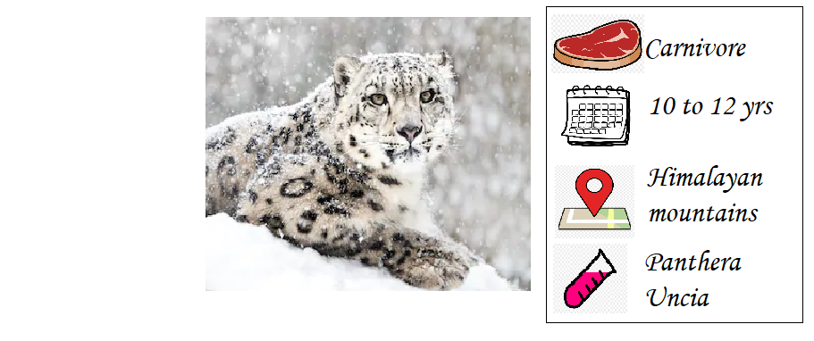
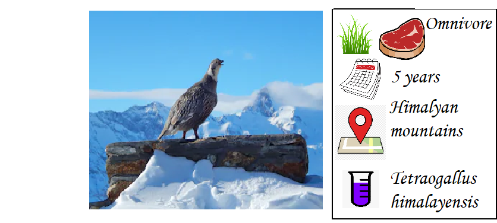

Endangered Snow Animals In India

SNOW LEOPARD
Snow leopards are tradionally found in the himalyan foothills,Himachal Pradesh and
Jammu Kashmir.They usually feed on-any smaller animals or creatures it can catch due
to its fast speed.They have been endangered because of regular poaching for they fur
and climate change.Although they have been protected under the national wildlife
protection act (1972) and others.There are only around 400 snow leopards left in
india.
-----------------------------------------------------------------------------------------------------------------------------------------------------------------------

HIMALYAN IBEX
The Himalyan Ibex is a sub speci of Siberian Ibex.It lives only in the Himalyan
foothills,it is also rare and it is hunted for its horns also it cant survive
warm climate and thus is endnageredd due to global warming.It feeds on wild sheeps
and goat and it was also protected under the wildlife protection act (1972).
-----------------------------------------------------------------------------------------------------------------------------------------------------------------------

HIMALYAN SNOWCOCK
Snowcocks usually reside in the Himalayan foothills in india.However they are very rare
and are often captured to other states and countries which is one of the reasons it is
endangered because it can only survive in cold climates.It feeds on primarily grasses and
wild snow berries and it doesnt fly to fast but it is an excellent climber.There are very
few snowcocks left in india
-----------------------------------------------------------------------------------------------------------------------------------------------------------------------